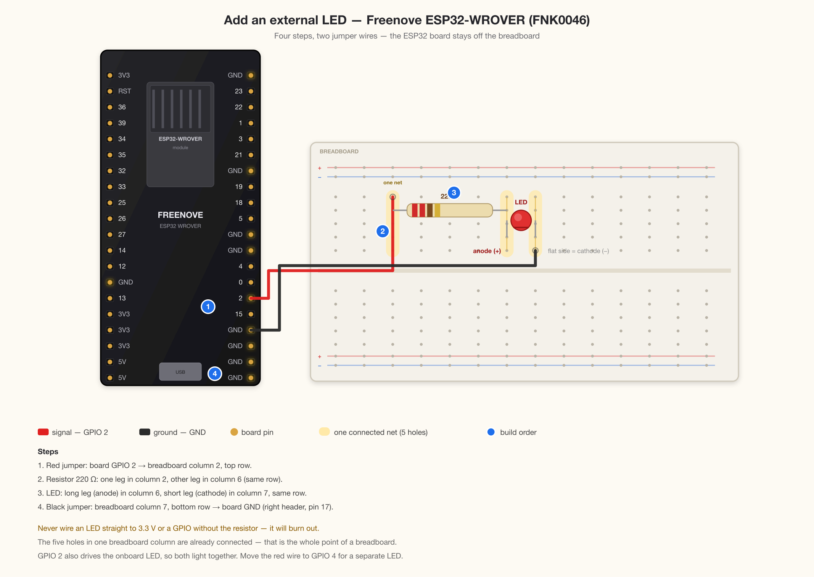
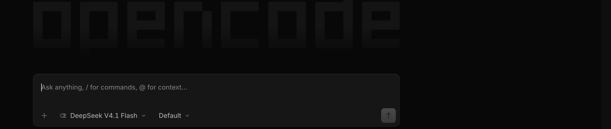
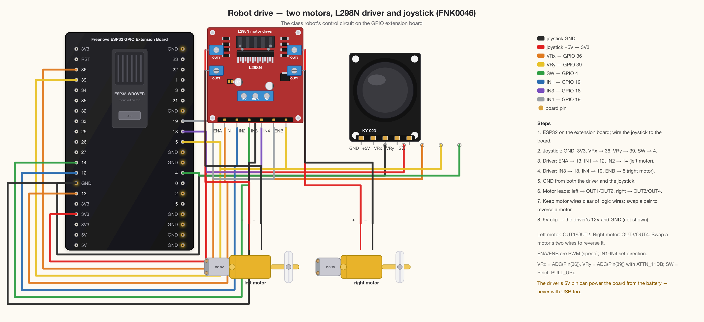
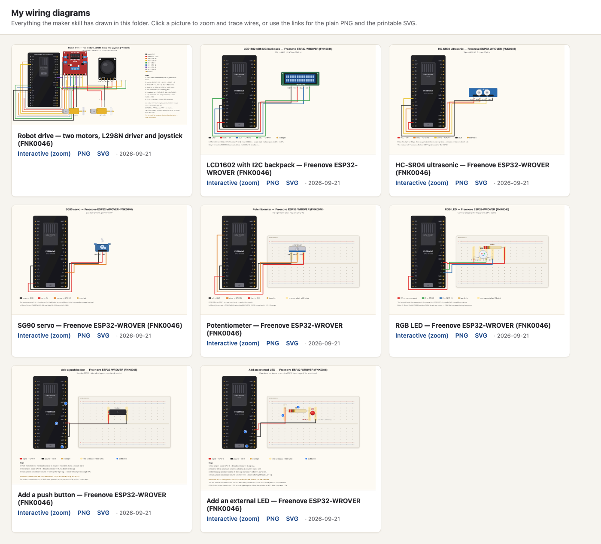

Beginner's Guide · One-time setup · No experience needed
Add your class tools to opencode
Turn on the class skills inside opencode — including the wiring-diagram maker we use in class. Paste one sentence, restart once, and you're set.
About 2 minutes
You only do it once
Wiring diagrams
For macOS & Windows

A wiring diagram drawn by the class tools: an LED on the breadboard, with every jumper wire routed and labelled.
Your class has a set of class tools that live on the class website — extra abilities you switch on inside opencode. The main one is a wiring-diagram maker: describe a circuit for your ESP32 kit, and opencode draws a labelled breadboard picture with the jumper wires routed for you.
You don't install anything and you can't break anything. You ask opencode to add the tools, restart it once, and from then on you can ask for diagrams like the one on the cover.
Why add them?
Wiring diagrams built for your kit — LEDs, buttons, buzzers, servos, motors, the ultrasonic sensor, the LCD1602, the camera, and more.
Always the class setup — the ESP32 on its GPIO extension board, real pin names, and the MicroPython pin choices from class.
They update themselves — when your instructor improves a tool on the class website, your copy picks it up next time opencode starts.
Nothing to install, nothing to pay — it rides along with the opencode setup you already did.
What you'll need
opencode installed and connected to DeepSeek V4.1 Flash (the macOS or Windows setup guide walks you through it)
An internet connection — the first download comes from the class website
About 2 minutes, once
Nothing to pay — this is part of your class materials
New word alert. An opencode skill is a small set of instructions and programs that teaches opencode a new trick. The class skills stay on the class website; opencode downloads its own copy and keeps it up to date.
1
Open opencode
Open opencode the same way you always do. It doesn't matter which project is open — a class project, a practice folder, or nothing at all.

Figure 1. The message box at the bottom is where everything starts — the same box you type questions in.
2
Paste this sentence
Click in opencode's message box, then copy and paste this whole sentence:
Copy and paste this
Add my class skills to opencode: https://tuftsmaker.github.io/ENT-164/skills/
Press Enter and let it work. It takes a few seconds. opencode downloads the class tools and notes where they came from, so it can update them later.
3
If it asks for permission, say yes
opencode may ask something like "Can I change your settings file?" or "Can I run this command?" — that's normal, and it's exactly what you asked for. Click Allow or Yes.
Not sure? It's only changing opencode's own settings, not anything else on your computer. Nothing is deleted, and you can undo it by asking opencode to remove the class skills again.
4
Quit opencode and open it again
This part matters — the new tools only appear after opencode restarts.
On a Mac, quit with ⌘+Q (or the opencode menu → Quit). On Windows, close the window.
Open it again the same way you always do.
5
Try it out
Type this into the message box and press Enter:
Try asking
Draw me a wiring diagram for connecting an LED to my ESP32
After a moment opencode draws the diagram, shows it in the reply, and saves the files in your project folder. More involved circuits work the same way:

Figure 2. The same tools drew the robot drive: two motors, the L298N driver, and the joystick — ask for one part at a time, or the whole robot.
What you can ask for
Ask in plain English — you don't need to know pin numbers. A few examples:
You can ask
What you get
"Draw me a wiring diagram for connecting an LED to my ESP32"
The LED and its resistor on the breadboard, wired to a free GPIO pin
"Add a push button that reads when it's pressed"
The button wired to a pin with the pull-up resistor arrangement from class
"Wire up my ultrasonic sensor"
The HC-SR04 on 5 V with Trig and Echo on the class pins
"Show me how to connect the servo"
The SG90's three wires — power, ground, and the signal pin from class
"How do I wire the LCD1602?"
The LCD with its I2C backpack on the class's SDA/SCL pins

Figure 3. Every diagram is collected in a local gallery in your project folder — click a picture to zoom and trace wires, or open the PNG or SVG. Nothing is uploaded anywhere.
If something goes wrong
What you see
What to do
opencode says it can't reach the website
Check you're connected to wifi. The class tools live online, so the first download needs internet.
Nothing new happens after restarting
Ask opencode: "do you have the maker skill?" — it will tell you either way. If not, paste the sentence from Step 2 again.
It asks to change settings or run a command
Say yes. That's the setup step doing its job — it's only touching opencode's own settings.
The diagram doesn't match your parts
Tell opencode what's different — for example, "use GPIO 4 for the LED" — and ask it to redraw. It re-renders in a second.
Still stuck
Show your instructor this guide. Nothing you did is broken, and it's quick to fix.
Words you'll see
Class tools
The skills your instructor publishes on the class website — the wiring-diagram maker and anything added later.
Skill
A set of instructions and programs that teaches opencode a new trick. opencode downloads skills from a URL and keeps them up to date.
Wiring diagram
A picture of the breadboard and board with the parts placed and every jumper wire routed and labelled.
Breadboard
The white board with a grid of holes where the parts plug in. Holes in one column already connect to each other.
Jumper wire
The coloured wires you use to connect the board, the breadboard, and the parts.
GPIO
A pin on the ESP32 that can send or read a signal — the diagram labels the one to use.
Where everything lives
What you want
Where to find it
The class tools themselves
tuftsmaker.github.io/ENT-164/skills/ — published by your instructor, no login
Your copy of the tools
Downloaded and cached by opencode; updates happen by themselves on restart
Your diagrams
Your project folder — PNG and SVG files, plus a gallery.html you can open in a browser
You never repeat this. The class tools update by themselves when your instructor changes them. If the website ever moves, your instructor will share the new sentence.